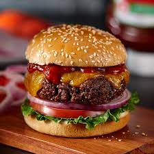
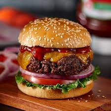
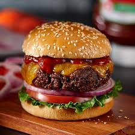
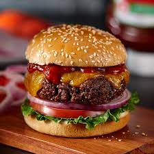

 

Welcome to our food website, where culinary delights and gastronomic adventures await you! We are your go-to destination for all things food-related, offering a diverse range of recipes, cooking tips, restaurant reviews, and much more. Whether you're a seasoned chef or a novice in the kitchen, our platform is designed to inspire and satisfy your culinary cravings. Explore a treasure trove of recipes spanning various cuisines, dietary preferences, and skill levels. From quick and easy weeknight dinners to indulgent desserts that will satisfy your sweet tooth, we've got you covered. Our team of food enthusiasts and experts curates content to bring you the latest trends, cooking techniques, and ingredient spotlights. Discover the stories behind your favorite dishes, and learn about the cultural and historical influences that shape the world of food. If you prefer dining out, our restaurant reviews and recommendations will guide you to the best eateries in town, ensuring that every meal is a memorable experience. We also keep you informed about food events, festivals, and the latest food-related news. Join our community of food lovers, share your own culinary creations, and connect with like-minded individuals who share your passion for all things delicious. Whether you're seeking inspiration for your next meal, looking to expand your cooking skills, or simply want to immerse yourself in the world of food, you've come to the right place. Thank you for visiting, and we hope your journey through our food paradise is as delightful as the dishes we feature. Happy cooking and eating!